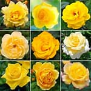

This is the page about the different colors of roses! Enjoy!

So this is a yellow rose! Fun fact: yellow is my favourite colour! The best time to grow these bright roses to enjoy in your garden is January and February! :)
This is a magenta rose. Fall is the best time to grow these beautiful and light flowers in your garden. :)